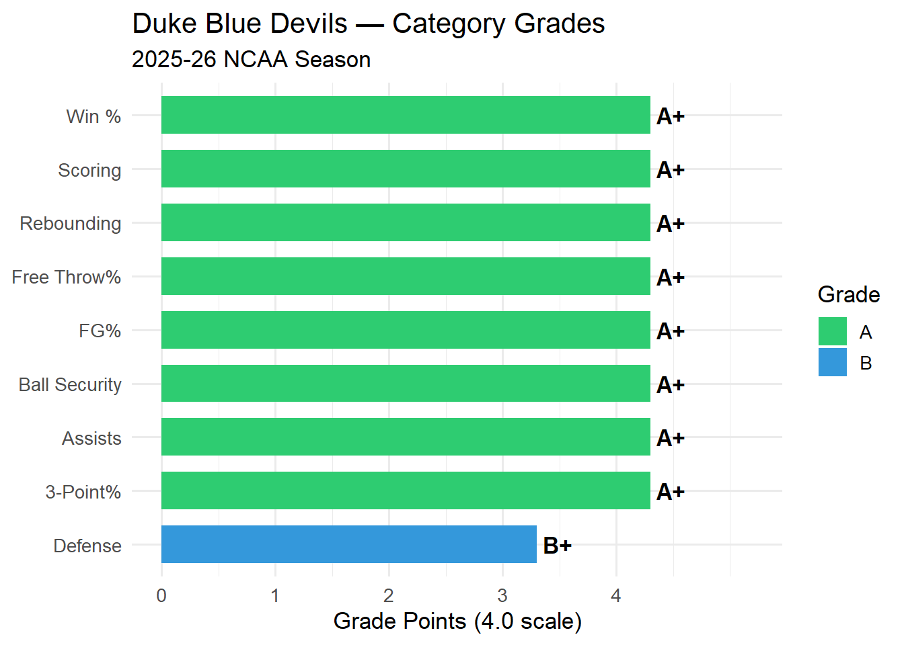
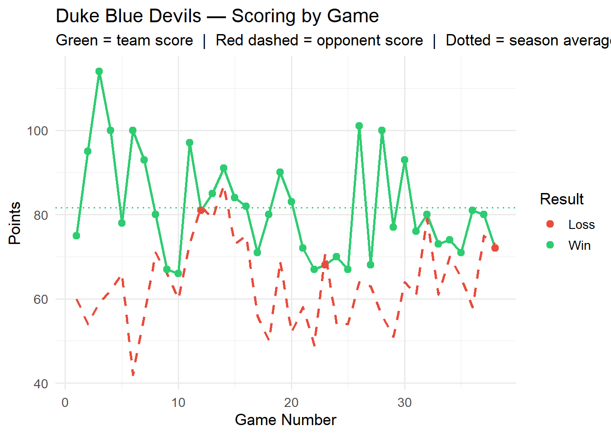
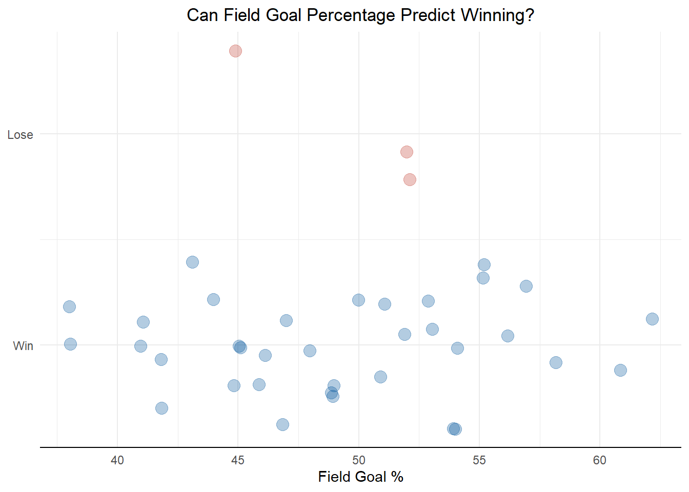

Duke Blue Devils — Team Season Grade Report
Duke Blue Devils — 2025-26 Season Report
Record: 35-3 (92.1% win rate) | Games Graded: 38
Overall Season Grade: A
Category Grades
Scoring Trend

Key Stats Summary
| Statistic | Season Avg |
|---|---|
| Points Per Game | 81.6 |
| Opp. Points Per Game | 63.6 |
| Point Differential | +18.0 |
| Field Goal % | 49.2% |
| Three-Point % | 34.8% |
| Free Throw % | 72.4% |
| Rebounds Per Game | 40.2 |
| Assists Per Game | 16.7 |
| Steals Per Game | 7.4 |
| Blocks Per Game | 3.4 |
| Turnovers Per Game | 10.7 |
How the Grade Is Calculated
Each category is graded against NCAA Division I per-game averages and converted to a 4.0 scale. The overall grade is a weighted average of all categories, with scoring and defense carrying the most weight (15% each). Ball security and win percentage each account for 10%.
The grade scale is: A+ (elite) · A / A- (excellent) · B range (above average) · C range (average) · D range (below average) · F (well below average).
Logistic Regression: Can Field Goal % Predict a Win?
Does field goal percentage predict whether Duke wins or loses?

Interpretation: Based on the actual numbers from Duke’s data (35 wins, 3 losses) — average FG% is 49.2% in wins vs. 49.7% in losses, essentially identical. Wins span 38–62% FG while losses span 45–52% FG, meaning the losses sit comfortably inside the range of shooting performances Duke also won with. With only 3 losses in 38 games, there isn’t enough variation in outcomes for field goal percentage to emerge as a meaningful predictor — Duke wins so consistently that shooting efficiency alone doesn’t distinguish their few losses from their many wins.
Call:
glm(formula = team_winner ~ field_goal_pct, family = binomial,
data = team_Duke_2026)
Coefficients:
Estimate Std. Error z value Pr(>|z|)
(Intercept) 3.14925 5.05536 0.623 0.533
field_goal_pct -0.01401 0.10114 -0.139 0.890
(Dispersion parameter for binomial family taken to be 1)
Null deviance: 20.991 on 37 degrees of freedom
Residual deviance: 20.971 on 36 degrees of freedom
AIC: 24.971
Number of Fisher Scoring iterations: 5The coefficient on field goal percentage is negative and the p-value (0.890) is high, confirming FG% does not play a statistically significant role in whether Duke wins.
Adding a Second Predictor: Turnovers
Call:
glm(formula = team_winner ~ field_goal_pct + turnovers, family = binomial,
data = team_Duke_2026)
Coefficients:
Estimate Std. Error z value Pr(>|z|)
(Intercept) 3.1409412 5.3577721 0.586 0.558
field_goal_pct -0.0140393 0.1012423 -0.139 0.890
turnovers 0.0009001 0.1927153 0.005 0.996
(Dispersion parameter for binomial family taken to be 1)
Null deviance: 20.991 on 37 degrees of freedom
Residual deviance: 20.971 on 35 degrees of freedom
AIC: 26.971
Number of Fisher Scoring iterations: 5Field goal percentage is still not a relevant variable in the model. Turnovers has a positive coefficient, suggesting it may influence winning, but its p-value (0.996) is far too high to be statistically significant, and the AIC (26.971) increased versus the single-predictor model.
Turnovers, Three-Point %, and Rebounds
Call:
glm(formula = team_winner ~ turnovers + three_point_field_goal_pct +
total_rebounds, family = binomial, data = team_Duke_2026)
Coefficients:
Estimate Std. Error z value Pr(>|z|)
(Intercept) -5.43227 7.72191 -0.703 0.482
turnovers 0.09635 0.28723 0.335 0.737
three_point_field_goal_pct -0.01580 0.07558 -0.209 0.834
total_rebounds 0.19987 0.12661 1.579 0.114
(Dispersion parameter for binomial family taken to be 1)
Null deviance: 20.991 on 37 degrees of freedom
Residual deviance: 17.223 on 34 degrees of freedom
AIC: 25.223
Number of Fisher Scoring iterations: 6Turnovers and total rebounds are the more meaningful variables in this model. Total rebounds has a low p-value, indicating statistical significance. The AIC is lower than the prior models — a better trade-off between fit and complexity — and the residual deviance is also lower, indicating a better fit to the data.
Probability of Winning by Turnover Rate
Bottom line: for this Duke team, field goal percentage doesn’t meaningfully predict whether they win or lose — their few losses look like they came from something other than poor shooting (e.g. a tougher opponent, an off night elsewhere). Turnovers and rebounding carry more predictive signal, though with only 3 losses on the season, every model here is working with very little variation to explain.
Interactive Stat Distribution Explorer
Use the dropdown below to see how any of Duke’s key stats were distributed across the season — every game becomes one entry in the histogram.
Prefer to explore this in R directly? The same variable-selector-and-histogram idea is available as a standalone Shiny app:
app.R. Open it in RStudio and click Run App for a version with an adjustable bin-count slider.